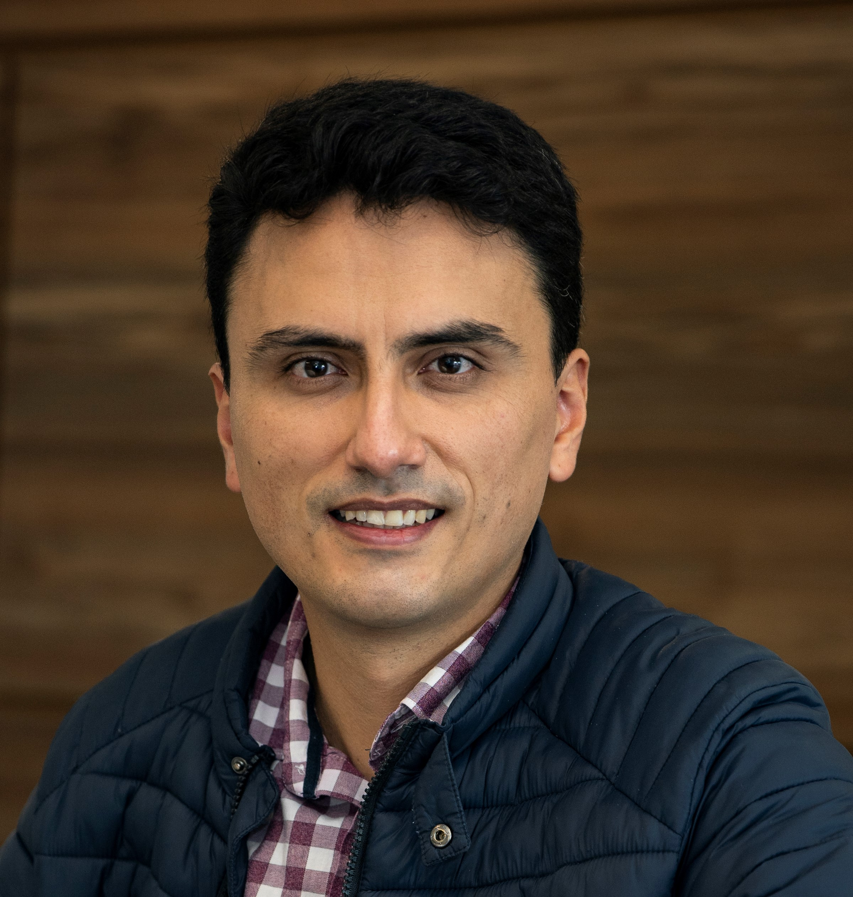
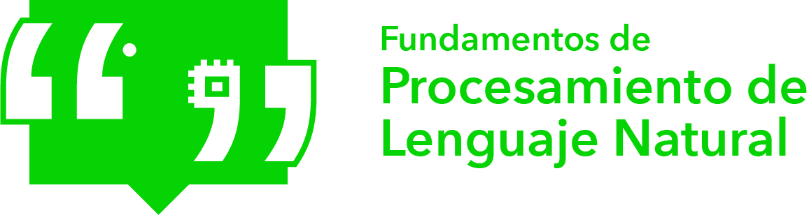
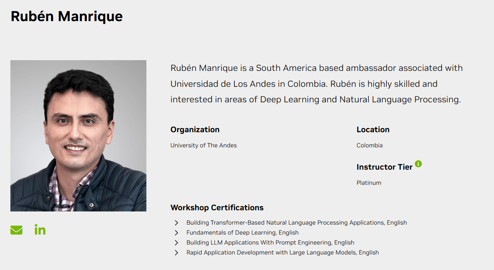
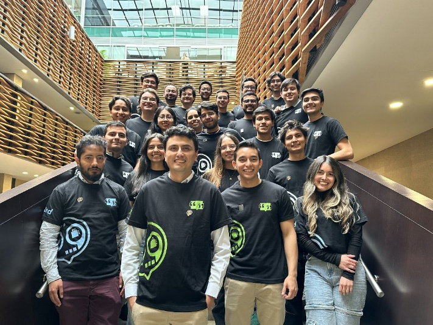
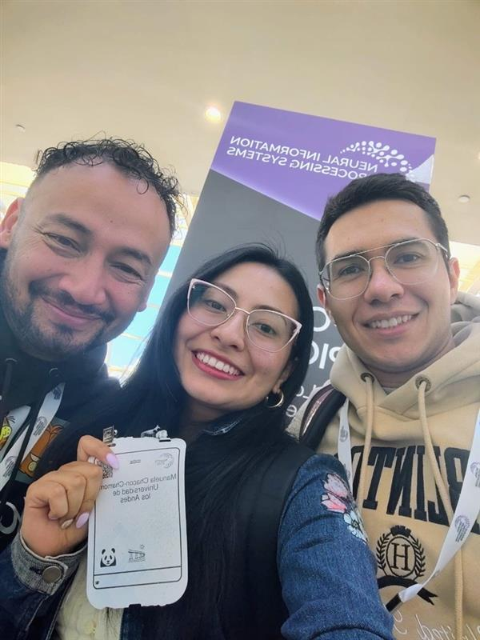
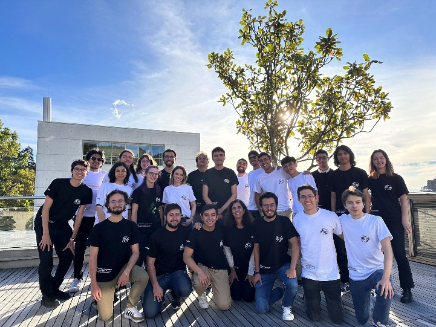
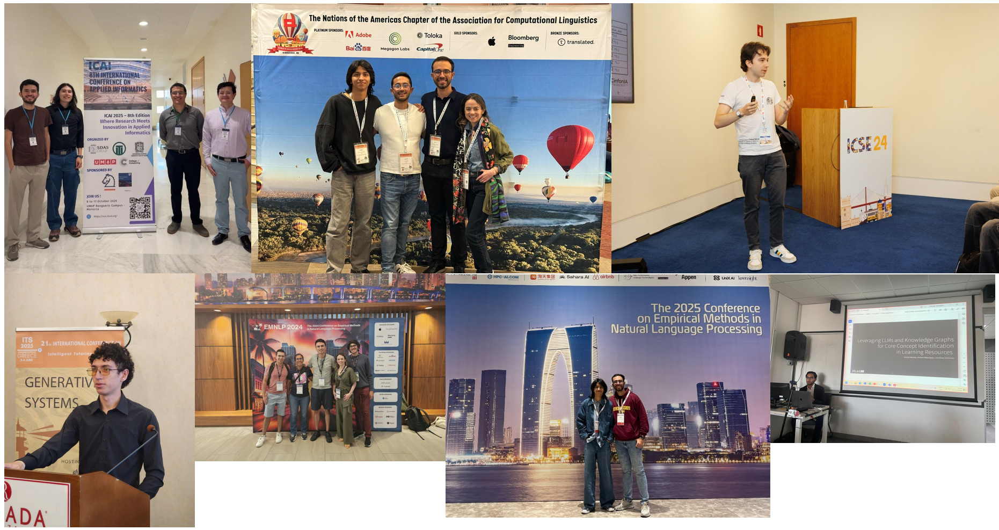
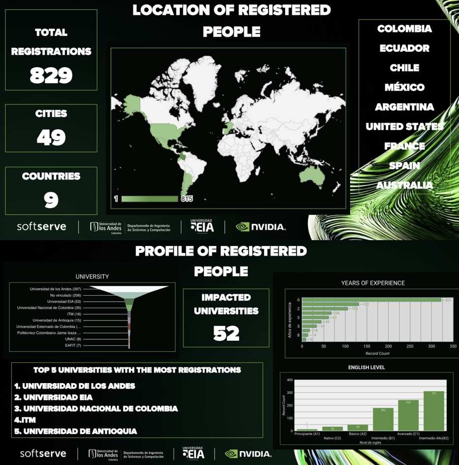
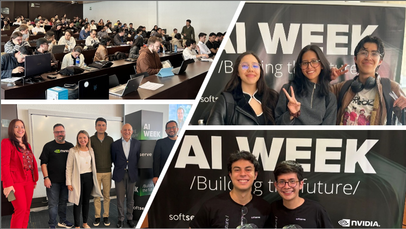
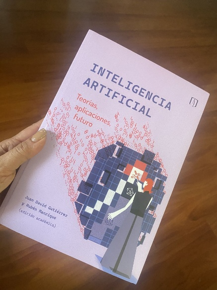

Revisión completa de las contribuciones en docencia, investigación y desarrollo institucional al Departamento de Ingeniería de Sistemas y Computación de la Universidad de los Andes.

“Las tres dimensiones sirven a un único objetivo: consolidar el PLN en Uniandes y en Colombia.”

Períodos terminados en -10/-20 = semestre de 16 semanas · -18/-19 = curso de verano · -11/-12/-14/-15 = intensivo de 8 semanas (posgrado)
| Año | Talleres | Capacitados | Certificados | Valor USD |
|---|---|---|---|---|
| 2023 | 3 | 132 | 107 | $53,500 |
| 2024 | 7 | 502 | 410 | $205,000 |
| 2025 | 9 | 554 | 443 | $221,500 |

Como Embajador de Nivel Platino del Instituto de Aprendizaje Profundo de NVIDIA, certificado en talleres de PLN, Rubén organiza e imparte capacitación en IA acelerada por GPU gratuitamente para los estudiantes de Uniandes—talleres que de otro modo tienen un precio de USD 500 por participante en el mercado público.
| Curso (top 4 ofertas por matrícula) | Estudiantes | Ingresos (COP) |
|---|---|---|
| Dominando la IA: más allá de ChatGPT y los modelos generativos (III) | 45 | $66,117,150 |
| Dominando la IA: más allá de ChatGPT y los modelos generativos (II) | 42 | $63,434,250 |
| Dominando la IA: más allá de ChatGPT y los modelos generativos (V) | 38 | $45,881,580 |
Cuando Rubén se incorporó al departamento en agosto de 2021, no existía ningún docente de PLN en Uniandes. A partir de su investigación doctoral y su experiencia industrial en IA, estableció la primera línea de investigación dedicada al PLN dentro del grupo FlagLab—una línea que había sido considerada una apuesta arriesgada antes de que los grandes modelos de lenguaje transformaran el campo.
Hoy, el grupo es reconocido a nivel nacional y ha alcanzado visibilidad en eventos internacionales como NeurIPS, AAAI y EMNLP.

Este proyecto desarrolla sistemas de traducción automática para cuatro lenguas indígenas colombianas de bajos recursos utilizando arquitecturas basadas en Transformer y aprendizaje por transferencia. Mediante la construcción de corpus paralelos abiertos, avanza en la preservación digital de comunidades cuyas lenguas son consideradas en riesgo de extinción.
Sitio web del proyecto: colombialanguages.virtual.uniandes.edu.co
★ Primera lengua indígena colombiana incluida en el taller AmericasNLP
"El esfuerzo nacional más significativo hasta la fecha en la construcción de corpus paralelos para lenguas indígenas colombianas."
Este proyecto interfacultades—que abarca Ingeniería de Sistemas, Ingeniería Electrónica (Nicanor Quijano) e Ingeniería Biomédica (Luis Felipe Giraldo)—evalúa la cooperación, resiliencia y generalización en agentes autónomos basados en LLM utilizando los benchmarks Melting Pot y Concordia.
Interfacultades: Sistemas · Electrónica · Ingeniería Biomédica

Contabiliza publicaciones desde 2021 (inicio como docente en Uniandes) · 2026 incluye artículos aceptados
Tabla 15 del portafolio: Q1=8 · Q2=6 · A*=7 · A=9 · B=9 · Otros=7 · Total=46 revisados por pares + 2 adicionales
| Estudiante | Tema de investigación | Estado |
|---|---|---|
| Juan Camilo Sanguino | Recomendación de recursos académicos en entornos de baja información | Graduado 2025 |
| Cristian A. Martínez | Por definir | Año 1 |
| Manuel A. Mosquera | Resolución de planificación mediante Modelos del Mundo | Año 2 |
| Edier Becerra | Agentes LLM gamificados | Año 2 |


La Semana IA es un evento anual de gran escala coorganizado con SoftServe y NVIDIA, que dota a los participantes de América Latina con habilidades avanzadas en IA Agéntica, IA Generativa y HPC. A lo largo de sus ediciones 2024 y 2025 se ha convertido en la principal plataforma de desarrollo de talento en IA de Colombia.
Socios: NVIDIA · SoftServe · Uniandes



Objetivo: Ascenso a Profesor Asociado y reconocimiento internacional en PLN